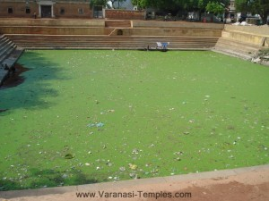

<?xml version="1.0" encoding="UTF-8"?><rss version="2.0"
	xmlns:content="http://purl.org/rss/1.0/modules/content/"
	xmlns:wfw="http://wellformedweb.org/CommentAPI/"
	xmlns:dc="http://purl.org/dc/elements/1.1/"
	xmlns:atom="http://www.w3.org/2005/Atom"
	xmlns:sy="http://purl.org/rss/1.0/modules/syndication/"
	xmlns:slash="http://purl.org/rss/1.0/modules/slash/"
	>

<channel>
	<title>Other Bhairav Temples &#8211; Varanasi Temples</title>
	<atom:link href="index.html" rel="self" type="application/rss+xml" />
	<link>../../../../index.html</link>
	<description>Temples of Varanasi as referred to in Kashi Khand</description>
	<lastBuildDate>Thu, 19 Jun 2025 05:16:46 +0000</lastBuildDate>
	<language>en-US</language>
	<sy:updatePeriod>hourly</sy:updatePeriod>
	<sy:updateFrequency>1</sy:updateFrequency>
	<generator>https://wordpress.org/?v=4.6.29</generator>
	<item>
		<title>A BRIEF ABOUT BHAIRAV TEMPLES</title>
		<link>../../../../bhairav-temples/other-bhairav-temples/a-brief-about-bhairav-temples/index.html</link>
		<comments>https://varanasitemples.in/bhairav-temples/other-bhairav-temples/a-brief-about-bhairav-temples/#comments</comments>
		<pubDate>Thu, 13 May 2010 12:46:20 +0000</pubDate>
		<dc:creator><![CDATA[admin]]></dc:creator>
				<category><![CDATA[A Brief about Bhairav Temples]]></category>
		<category><![CDATA[Other Bhairav Temples]]></category>
		<category><![CDATA[bha]]></category>
		<category><![CDATA[bhairav]]></category>
		<category><![CDATA[durga]]></category>
		<category><![CDATA[durga temples]]></category>
		<category><![CDATA[temples]]></category>
		<category><![CDATA[varanasi-temples.com]]></category>

		<guid isPermaLink="false">http://varanasi-temples.com/bhairav-temples/other-bhairav-temples/a-brief-about-bhairav-temples/</guid>
		<description><![CDATA[After Goddess killed the evil demon Durgasur (Kindly refer Durga Devi), she created  nine shaktis which were stationed in various places in Kashi to protect the holy city and its denizens. (Kashi Khand, Chapter 72). In the same way eight forms of Bhairavs were created who were positioned at various places in Kashi.  These Bhairavs [&#8230;]]]></description>
				<content:encoded><![CDATA[<p>After Goddess killed the evil demon Durgasur (Kindly refer Durga Devi), she created  nine shaktis which were stationed in various places in Kashi to protect the holy city and its denizens. (Kashi Khand, Chapter 72).</p>
<p>In the same way eight forms of Bhairavs were created who were positioned at various places in Kashi.  These Bhairavs protect the devotees from all sorts of evils and give the devotees happiness and prosperity in their lives.</p>
<p>Devotees who worship these Bhairavs will develop a strong mental frame work and will be courageous.</p>
]]></content:encoded>
			<wfw:commentRss>../../../../bhairav-temples/other-bhairav-temples/a-brief-about-bhairav-temples/feed/index.html</wfw:commentRss>
		<slash:comments>1</slash:comments>
		</item>
		<item>
		<title>BHEESHAN BHAIRAV (BHOOT BHAIRAV)</title>
		<link>../../../../bhairav-temples/bheeshan-bhairav-bhoot-bhairav/index.html</link>
		<pubDate>Tue, 11 May 2010 08:26:00 +0000</pubDate>
		<dc:creator><![CDATA[admin]]></dc:creator>
				<category><![CDATA[Bhairav Temples]]></category>
		<category><![CDATA[Bheeshan Bhairav]]></category>
		<category><![CDATA[Other Bhairav Temples]]></category>
		<category><![CDATA[banaras bhoot mandir]]></category>
		<category><![CDATA[bhairav]]></category>
		<category><![CDATA[bhairav bhoot]]></category>
		<category><![CDATA[bheeshan]]></category>
		<category><![CDATA[bheeshan bhairav]]></category>
		<category><![CDATA[bheeshan temple]]></category>
		<category><![CDATA[bhoot]]></category>
		<category><![CDATA[bhoot bhairav]]></category>
		<category><![CDATA[bhoot bhairav temple]]></category>
		<category><![CDATA[bhoot bhairavi]]></category>
		<category><![CDATA[bhoot photos]]></category>
		<category><![CDATA[bhoot picture]]></category>
		<category><![CDATA[bhoot siddhi]]></category>
		<category><![CDATA[bhooth bhairav]]></category>
		<category><![CDATA[bhut bhairav]]></category>
		<category><![CDATA[http://varanasi-temples.com/bhairav-temples/bheeshan-bhairav-bhoot-bhairav/]]></category>
		<category><![CDATA[jyes]]></category>
		<category><![CDATA[samhar bhairav]]></category>
		<category><![CDATA[samhar/com]]></category>
		<category><![CDATA[yama and chamunda]]></category>

		<guid isPermaLink="false">../../../../p=568.html</guid>
		<description><![CDATA[Bheeshan Bhairav is located at K.63/28, Bhoot Bhairav, near Jyeshteshwar.  This deity is also known as Bhoot Bhairav.  Devotees can reach this place in a rickshaw through Sapt Sagar or Kashipura. (BHEESHAN BHAIRAV) The morning Aarti at around 10 am is a treat to watch.  Please watch our YouTube Video about Bheeshan Bhairav  at following Link https://www.youtube.com/watch?v=0T5SMXRgQQs&#38;t=11s [&#8230;]]]></description>
				<content:encoded><![CDATA[<p>Bheeshan Bhairav is located at K.63/28, Bhoot Bhairav, near Jyeshteshwar.  This deity is also known as Bhoot Bhairav.  Devotees can reach this place in a rickshaw through Sapt Sagar or Kashipura.</p>
<p></p>
<h4></h4>
<h4 style="text-align: center;">(BHEESHAN BHAIRAV)</h4>
<h4>The morning Aarti at around 10 am is a treat to watch.</h4>
<h4> <strong>Please watch our YouTube Video about Bheeshan Bhairav  at following Link</strong></h4>
<h4></h4>
<p><a href="https://www.youtube.com/watch?v=0T5SMXRgQQs&amp;t=11s">https://www.youtube.com/watch?v=0T5SMXRgQQs&amp;t=11s</a></p>
<p>&nbsp;</p>
<p>&nbsp;</p>
<h4>TYPES OF POOJA</h4>
<p>The place of worship is open from 06.00 a.m. to 10.00 a.m. and from 06.00 p.m. to 08.00 p.m.  Timings are flexible.</p>
]]></content:encoded>
			</item>
		<item>
		<title>SAMHAR BHAIRAV</title>
		<link>../../../../bhairav-temples/samhar-bhairav/index.html</link>
		<pubDate>Tue, 11 May 2010 08:24:23 +0000</pubDate>
		<dc:creator><![CDATA[admin]]></dc:creator>
				<category><![CDATA[Bhairav Temples]]></category>
		<category><![CDATA[Other Bhairav Temples]]></category>
		<category><![CDATA[Samhar Bhairav]]></category>
		<category><![CDATA[bhairav]]></category>
		<category><![CDATA[lord unmat bhairav]]></category>
		<category><![CDATA[samhar]]></category>
		<category><![CDATA[samhar bhairav]]></category>
		<category><![CDATA[unmat bhairav]]></category>
		<category><![CDATA[unmatbhairav]]></category>
		<category><![CDATA[unmatt bhairav]]></category>

		<guid isPermaLink="false">../../../../p=566.html</guid>
		<description><![CDATA[Besides the above narration of Kashi Khand, there is reference to Samhar Bhairav in Chapter 69.  Here it is stated that Samhar Bhairav has come from Bhairav Kshetra and this Bhairav annihilates the sins of the devotees who worship Him. Samhar Bhairav is located at A.1/82, Patan Darwaja, near Gai Ghat.  This area falls towards [&#8230;]]]></description>
				<content:encoded><![CDATA[<p>Besides the above narration of Kashi Khand, there is reference to Samhar Bhairav in Chapter 69.  Here it is stated that Samhar Bhairav has come from Bhairav Kshetra and this Bhairav annihilates the sins of the devotees who worship Him.</p>
<p>Samhar Bhairav is located at A.1/82, Patan Darwaja, near Gai Ghat.  This area falls towards the northern side of Kashi.  Devotees can reach this place by rickshaw through Machhodari. They can also take a boat ride upto Gai Ghat and climb the steps.</p>
<h2></h2>
<h2 style="text-align: center;">(SAMHAR BHAIRAV)</h2>
<p><strong>Please watch our YouTube video on Samhar Bhairav in the following link :</strong></p>
<p>&nbsp;</p>
<p><a href="https://www.youtube.com/watch?v=yc6cjqcNyTI&amp;t=23s">https://www.youtube.com/watch?v=yc6cjqcNyTI&amp;t=23s</a></p>
<h2></h2>
<h2>TYPES OF POOJA</h2>
<p>The place of worship is open from 05.00 a.m. to 11.00 a.m. and from 05.00  p.m. to 09.30 p.m.  Timings are flexible.  Devotees can worship as per their convenience.</p>
]]></content:encoded>
			</item>
		<item>
		<title>UNMAT BHAIRAV</title>
		<link>../../../../bhairav-temples/unmat-bhairav/index.html</link>
		<pubDate>Tue, 11 May 2010 08:22:43 +0000</pubDate>
		<dc:creator><![CDATA[admin]]></dc:creator>
				<category><![CDATA[Bhairav Temples]]></category>
		<category><![CDATA[Other Bhairav Temples]]></category>
		<category><![CDATA[Unmat Bhairav]]></category>
		<category><![CDATA[unmat bhairav]]></category>

		<guid isPermaLink="false">../../../../p=564.html</guid>
		<description><![CDATA[Unmat Bhairav is located in the Panch Kroshi Marg at Deora Village, which is about 15 Kms. away from Varanasi. Since this temple is situated very far away from Varanasi, devotees may find it difficult to reach there.  Recently one staunch devotee has fully renovated this temple. Shri Akhilesh Pandey is the Priest of this [&#8230;]]]></description>
				<content:encoded><![CDATA[<p>Unmat Bhairav is located in the Panch Kroshi Marg at Deora Village, which is about 15 Kms. away from Varanasi.</p>
<p>Since this temple is situated very far away from Varanasi, devotees may find it difficult to reach there.  Recently one staunch devotee has fully renovated this temple.</p>
<p>Shri Akhilesh Pandey is the Priest of this temple.  Devotees may speak to him at 9118460531 for any guidance and directions.</p>
<p>&nbsp;</p>
<h2></h2>
<h2 style="text-align: center;"> (UNMAT BHAIRAV)</h2>
<h2>Please watch our YouTube video on Unmat Bhairav in the following link :</h2>
<p>&nbsp;</p>
<p><a href="https://www.youtube.com/watch?v=yc6cjqcNyTI&amp;t=23s">https://www.youtube.com/watch?v=yc6cjqcNyTI&amp;t=23s</a></p>
<h2></h2>
<h2>TYPES OF POOJA</h2>
<p>The place of worship is open practically throughout the day.</p>
]]></content:encoded>
			</item>
		<item>
		<title>KRODHAN BHAIRAV</title>
		<link>../../../../bhairav-temples/krodhan-bhairav/index.html</link>
		<pubDate>Tue, 11 May 2010 08:21:27 +0000</pubDate>
		<dc:creator><![CDATA[admin]]></dc:creator>
				<category><![CDATA[Bhairav Temples]]></category>
		<category><![CDATA[Krodhan Bhairav]]></category>
		<category><![CDATA[Other Bhairav Temples]]></category>
		<category><![CDATA[batik bhairav]]></category>
		<category><![CDATA[batuk]]></category>
		<category><![CDATA[batuk bhairav]]></category>
		<category><![CDATA[batuk bhairav varanasi]]></category>
		<category><![CDATA[krodhan bhairav]]></category>
		<category><![CDATA[krodhan bhairav location]]></category>
		<category><![CDATA[rahu]]></category>
		<category><![CDATA[unmat bhairab]]></category>
		<category><![CDATA[unmat bhairav]]></category>

		<guid isPermaLink="false">../../../../p=562.html</guid>
		<description><![CDATA[Krodhan Bhairav is known as Aadi Bhairav and is located at Batuk Bhairav temple at B.31/126, Kamachha, Varanasi.  Devotees can reach this place in rickshaw from anywhere in Kashi as Kamachha and Batuk Bhairav are famous places. Some people say that Krodhan Bhairav is the small Bhairav located adjacent to Kamakhya Devi in the temple [&#8230;]]]></description>
				<content:encoded><![CDATA[<p>Krodhan Bhairav is known as Aadi Bhairav and is located at Batuk Bhairav temple at B.31/126, Kamachha, Varanasi.  Devotees can reach this place in rickshaw from anywhere in Kashi as Kamachha and Batuk Bhairav are famous places. Some people say that Krodhan Bhairav is the small Bhairav located adjacent to Kamakhya Devi in the temple nearby.</p>
<h4></h4>
<p style="text-align: center;"><strong>(KRODHAN BHAIRAV &#8211; AADI BHAIRAV)</strong></p>
<h4><strong>Please watch our YouTube Video about Krodhan Bhairav  at following Link</strong></h4>
<h4></h4>
<p><a href="https://www.youtube.com/watch?v=mWq7tpm11Bc&amp;t=121s">https://www.youtube.com/watch?v=mWq7tpm11Bc&amp;t=121s</a></p>
<p>&nbsp;</p>
<p>&nbsp;</p>
<h4><span style="text-decoration: underline;">TYPES OF POOJA</span></h4>
<p>The place of worship is open from 05.00 a.m. to 12.00 Noon and from 04.00 p.m. to 12.00 p.m.  Aarties are conducted in the morning and evening.</p>
<p>&nbsp;</p>
<h5><strong>POOJARIES OF THE TEMPLE</strong></h5>
<p>Mahant Vijay Puri and Acharya Shambu Saran are available near the temple premises and can be contacted at Mobile No. (0)9839152539 from 09.00 a.m. to 12.00 noon and from 06.00 p.m. to 09.00 p.m.  According to the Mahantji, devotees contact the temple authorities for Rahu Shanti, relief from Kaal Sarp Dosh, Tantra Nivaran etc., for which Japam (repetition of a set of mantras) is being undertaken at the temple.</p>
]]></content:encoded>
			</item>
		<item>
		<title>KAPAL BHAIRAV (LAAT BHAIRAV)</title>
		<link>../../../../bhairav-temples/kapal-bhairav-laat-bhairav/index.html</link>
		<pubDate>Tue, 11 May 2010 08:20:12 +0000</pubDate>
		<dc:creator><![CDATA[admin]]></dc:creator>
				<category><![CDATA[Bhairav Temples]]></category>
		<category><![CDATA[Kapal Bhairav (Laat Bhairav)]]></category>
		<category><![CDATA[Other Bhairav Temples]]></category>
		<category><![CDATA[bhairav in varanasi]]></category>
		<category><![CDATA[kapal]]></category>
		<category><![CDATA[kapal bhairav]]></category>
		<category><![CDATA[kapalmochan]]></category>
		<category><![CDATA[laat]]></category>

		<guid isPermaLink="false">../../../../p=560.html</guid>
		<description><![CDATA[Kapal Bhairav (Laat Bhairav) is located at A.1/123, Alaipur.  This falls almost on the outskirts of Varanasi towards the North Eastern side.   Devotees can travel in a rickshaw/auto to reach this place.  From Ashapur Chowmani, the road to the left goes to Sarnath. Devotees should take the road to the right and travel about 2 [&#8230;]]]></description>
				<content:encoded><![CDATA[<p>Kapal Bhairav (Laat Bhairav) is located at A.1/123, Alaipur.  This falls almost on the outskirts of Varanasi towards the North Eastern side.   Devotees can travel in a rickshaw/auto to reach this place.  From Ashapur Chowmani, the road to the left goes to Sarnath. Devotees should take the road to the right and travel about 2 kms. to reach Laat Bhairav.</p>
<h2></h2>
<h2 style="text-align: center;"> (KAPAL BHAIRAV)</h2>
<h4><strong>Please watch our YouTube Video about Laat Bhairav  at following Link</strong></h4>
<h2></h2>
<p><a href="https://www.youtube.com/watch?v=mWq7tpm11Bc&amp;t=121s">https://www.youtube.com/watch?v=mWq7tpm11Bc&amp;t=121s</a></p>
<h2></h2>
<h2>TYPES OF POOJA</h2>
<p>The place of worship is open from 06.00 a.m. to 11.00 a.m. and from 06.00 p.m. to 09.00 p.m.  The timings are extremely flexible. Devotees can worship this deity as per their convenience.</p>
<div id="attachment_1806" style="width: 310px" class="wp-caption aligncenter"><a href="../../../../assets/images/Kapal-Mochan-Teerth-Laat-Sarovar2.jpg"></a><p class="wp-caption-text">Kapal Mochan Teerth (Laat Sarovar)</p></div>
]]></content:encoded>
			</item>
		<item>
		<title>ASITANG BHAIRAV</title>
		<link>../../../../bhairav-temples/asitang-bhairav/index.html</link>
		<pubDate>Tue, 11 May 2010 08:18:39 +0000</pubDate>
		<dc:creator><![CDATA[admin]]></dc:creator>
				<category><![CDATA[Asitang Bhairav]]></category>
		<category><![CDATA[Bhairav Temples]]></category>
		<category><![CDATA[Other Bhairav Temples]]></category>
		<category><![CDATA[asitang]]></category>
		<category><![CDATA[asitang bhairav]]></category>
		<category><![CDATA[bhairav]]></category>
		<category><![CDATA[chand bhairav]]></category>
		<category><![CDATA[mrityunjay]]></category>

		<guid isPermaLink="false">../../../../p=558.html</guid>
		<description><![CDATA[Asitang Bhairav is located at K.52/39, Maha Mrityunjay temple near Vriddh Kaleshwar.  Devotees can reach this place by rickshaw by travelling through Bisheshwarganj G.P.O.  Mrityunjay temple is quite famous. (ASITANG BHAIRAV) This temples falls in the religious area of Krithi Vaasaa Peet.  Any prayers undertaken here will yield multiple benefits. Please watch our YouTube Video [&#8230;]]]></description>
				<content:encoded><![CDATA[<p style="text-align: left;">Asitang Bhairav is located at K.52/39, Maha Mrityunjay temple near Vriddh Kaleshwar.  Devotees can reach this place by rickshaw by travelling through Bisheshwarganj G.P.O.  Mrityunjay temple is quite famous.</p>
<p style="text-align: left;"></p>
<p style="text-align: left;">
<p style="text-align: center;"><strong>(ASITANG BHAIRAV)</strong></p>
<p style="text-align: left;">This temples falls in the religious area of Krithi Vaasaa Peet.  Any prayers undertaken here will yield multiple benefits.</p>
<h2></h2>
<p><strong>Please watch our YouTube Video about Asitang Bhairav  at following Link</strong></p>
<h2></h2>
<h2><a href="https://www.youtube.com/watch?v=0T5SMXRgQQs&amp;t=11s">https://www.youtube.com/watch?v=0T5SMXRgQQs&amp;t=11s</a></h2>
<h2></h2>
<h2>TYPES OF POOJA</h2>
<p>The place of worship is open throughout the day. Devotees can worship this deity as per their convenience.</p>
<p>&nbsp;</p>
<p><strong>LOCATION OF MRITYUNJAY MAHADEV TEMPLE AS PER GOOGLE MAPS IS GIVEN BELOW</strong></p>
<p>&nbsp;</p>
<p><a href="https://www.google.com/maps/place/Mahamrityunjay+Mahadev+Temple/@25.3222648,83.014546,20z/data=!4m12!1m6!3m5!1s0x398e2e3d7dd1fb31:0x15ea53adbe61e75a!2sAnjaneya+Temple!8m2!3d25.3221965!4d83.0148166!3m4!1s0x398e2e3d59280bad:0x5b8de15c093375b2!8m2!3d25.3221891!4d83.0147241">https://www.google.com/maps/place/Mahamrityunjay+Mahadev+Temple/@25.3222648,83.014546,20z/data=!4m12!1m6!3m5!1s0x398e2e3d7dd1fb31:0x15ea53adbe61e75a!2sAnjaneya+Temple!8m2!3d25.3221965!4d83.0148166!3m4!1s0x398e2e3d59280bad:0x5b8de15c093375b2!8m2!3d25.3221891!4d83.0147241</a></p>
<p>&nbsp;</p>
<p>&nbsp;</p>
]]></content:encoded>
			</item>
		<item>
		<title>CHAND BHAIRAV</title>
		<link>../../../../bhairav-temples/chand-bhairav/index.html</link>
		<pubDate>Tue, 11 May 2010 08:17:01 +0000</pubDate>
		<dc:creator><![CDATA[admin]]></dc:creator>
				<category><![CDATA[Bhairav Temples]]></category>
		<category><![CDATA[Chand Bhairav]]></category>
		<category><![CDATA[Other Bhairav Temples]]></category>
		<category><![CDATA[asitang bhairav]]></category>
		<category><![CDATA[bha]]></category>
		<category><![CDATA[bhrigu]]></category>
		<category><![CDATA[chand bhairav]]></category>
		<category><![CDATA[chand bhairo photo]]></category>
		<category><![CDATA[chandbhairav]]></category>
		<category><![CDATA[durga devi and bhairav]]></category>

		<guid isPermaLink="false">../../../../p=556.html</guid>
		<description><![CDATA[(CHAND BHAIRAV) Chand Bhairav is located in the temple premises of Durga Devi at B.27/2, Durga Kund.  This is a famous locality and devotees can reach this place by rickshaw or auto or car. Please watch our YouTube Video about Chand Bhairav  at following Link https://www.youtube.com/watch?v=mWq7tpm11Bc&#38;t=121s TYPES OF POOJA This place of worship is open throughout the [&#8230;]]]></description>
				<content:encoded><![CDATA[<p style="text-align: left;">
<p style="text-align: left;"></p>
<p style="text-align: left;">
<p style="text-align: center;"><strong>(CHAND BHAIRAV)</strong></p>
<p style="text-align: left;">Chand Bhairav is located in the temple premises of Durga Devi at B.27/2, Durga Kund.  This is a famous locality and devotees can reach this place by rickshaw or auto or car.</p>
<h4><strong>Please watch our YouTube Video about Chand Bhairav  at following Link</strong></h4>
<h2></h2>
<p><a href="https://www.youtube.com/watch?v=mWq7tpm11Bc&amp;t=121s">https://www.youtube.com/watch?v=mWq7tpm11Bc&amp;t=121s</a></p>
<h2></h2>
<p><strong>TYPES OF POOJA</strong></p>
<p>This place of worship is open throughout the day. Devotees can worship this deity as per their convenience.</p>
]]></content:encoded>
			</item>
		<item>
		<title>RURU BHAIRAV</title>
		<link>../../../../bhairav-temples/ruru-bhairav/index.html</link>
		<pubDate>Tue, 11 May 2010 08:14:46 +0000</pubDate>
		<dc:creator><![CDATA[admin]]></dc:creator>
				<category><![CDATA[Bhairav Temples]]></category>
		<category><![CDATA[Other Bhairav Temples]]></category>
		<category><![CDATA[Ruru Bhairav]]></category>
		<category><![CDATA[hanuman]]></category>
		<category><![CDATA[ru ru bhairav]]></category>
		<category><![CDATA[ruru bhairav]]></category>

		<guid isPermaLink="false">../../../../p=553.html</guid>
		<description><![CDATA[Ruru Bhairav, also called as Anand Bhairav by locals, is located at B.4/16, Hanuman Ghat, Varanasi.  Devotees can travel upto this place in a rickshaw.  Hanuman Ghat is near Harishchandra Ghat, one of the cremation grounds and is a famous place. Devotees will have to get down at Hanuman Ghat main Road and walk towards [&#8230;]]]></description>
				<content:encoded><![CDATA[<p style="text-align: left;">Ruru Bhairav, also called as Anand Bhairav by locals, is located at B.4/16, Hanuman Ghat, Varanasi.  Devotees can travel upto this place in a rickshaw.  Hanuman Ghat is near Harishchandra Ghat, one of the cremation grounds and is a famous place. Devotees will have to get down at Hanuman Ghat main Road and walk towards the Hanuman Temple which is located near Ruru Bhairav.</p>
<p></p>
<p>&nbsp;</p>
<p style="text-align: center;"><strong>(RURU BHAIRAV)</strong></p>
<p>&nbsp;</p>
<p><strong>Please watch our YouTube video on Ruru Bhairav in the  folowing link :</strong></p>
<p>&nbsp;</p>
<p><a href="https://www.youtube.com/watch?v=yc6cjqcNyTI&amp;t=23s">https://www.youtube.com/watch?v=yc6cjqcNyTI&amp;t=23s</a></p>
<p>&nbsp;</p>
<p><strong><span style="text-decoration: underline;">TYPES OF POOJA</span></strong></p>
<p>The place of worship is open from 05.00 a.m. to 10.00 a.m. and from 05.00 p.m. to 09.30 p.m.  Aarties are conducted in the morning and evening.</p>
]]></content:encoded>
			</item>
		<item>
		<title>OTHER  BHAIRAV TEMPLES</title>
		<link>../../../../bhairav-temples/other-bhairav-temples/index.html</link>
		<pubDate>Tue, 11 May 2010 08:13:12 +0000</pubDate>
		<dc:creator><![CDATA[admin]]></dc:creator>
				<category><![CDATA[Bhairav Temples]]></category>
		<category><![CDATA[Other Bhairav Temples]]></category>

		<guid isPermaLink="false">../../../../p=551.html</guid>
		<description><![CDATA[After Goddess killed the evil demon Durgasur (Kindly refer Durga Devi), she created  nine shaktis which were stationed in various places in Kashi to protect the holy city and its denizens. (Kashi Khand, Chapter 72). In the same way eight forms of Bhairavs were created who were positioned at various places in Kashi.  These Bhairavs [&#8230;]]]></description>
				<content:encoded><![CDATA[<p>After Goddess killed the evil demon Durgasur (Kindly refer Durga Devi), she created  nine shaktis which were stationed in various places in Kashi to protect the holy city and its denizens. (Kashi Khand, Chapter 72).</p>
<p>In the same way eight forms of Bhairavs were created who were positioned at various places in Kashi.  These Bhairavs protect the devotees from all sorts of evils and give the devotees happiness and prosperity in their lives.</p>
<p>Devotees who worship these Bhairavs will develop a strong mental frame work and will be courageous.</p>
]]></content:encoded>
			</item>
	</channel>
</rss>
